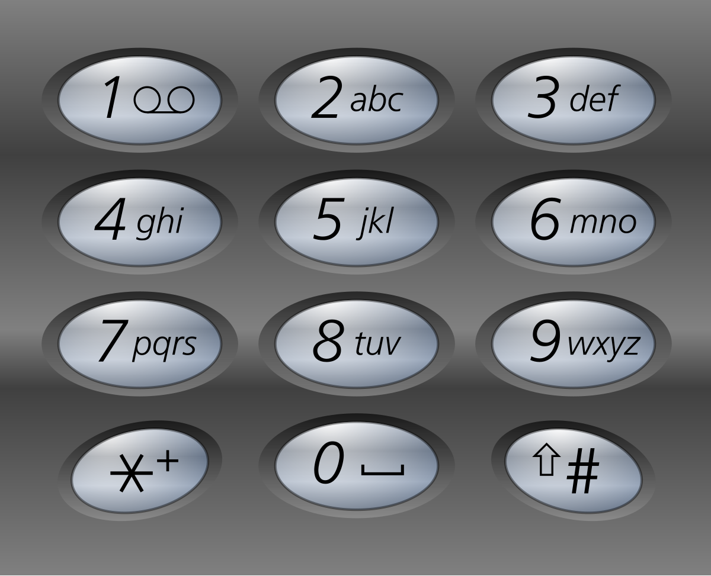

17. 电话号码的字母组合
回溯逐位展开：第 i 位从数字对应的字母里选一个接到 path 上，选完递归下一位，返回前撤销换下一个。
思路
- 常量表
MAP[数字]给出该位的候选字母；7、9有 4 个，其余 3 个。 dfs(i)：i走到末尾就把path收进答案；否则枚举MAP里每个字母，append→ 递归i+1→deleteCharAt撤销。digits为空要特判返回空列表，否则会输出一个空串。- 共
3^n ~ 4^n个组合，输出本身就是这个量级。
图解
最优解
1import java.util.*;2 3class Solution {4 // 数字 -> 字母，下标 0、1 没有对应字母5 private static final String[] MAP = {"", "", "abc", "def", "ghi", "jkl", "mno", "pqrs", "tuv", "wxyz"};6 7 public List<String> letterCombinations(String digits) {8 List<String> ans = new ArrayList<>();9 if (!digits.isEmpty()) dfs(digits, 0, new StringBuilder(), ans); // 空串不进递归，返回空列表10 return ans;11 }12 13 // 逐位展开：第 i 位从对应字母里选一个接到 path 上14 private void dfs(String digits, int i, StringBuilder path, List<String> ans) {15 if (i == digits.length()) {16 ans.add(path.toString());17 return;18 }19 for (char c : MAP[digits.charAt(i) - '0'].toCharArray()) {20 path.append(c);21 dfs(digits, i + 1, path, ans); // 选完这位，去定下一位22 path.deleteCharAt(path.length() - 1); // 撤销，换这位的下一个字母23 }24 }25}题目
给定一个仅包含数字 2-9 的字符串，返回所有它能表示的字母组合。答案可以按 任意顺序 返回。
给出数字到字母的映射如下（与电话按键相同）。注意 1 不对应任何字母。

示例 1：
输入：digits = "23" 输出：["ad","ae","af","bd","be","bf","cd","ce","cf"]
示例 2：
输入：digits = "2" 输出：["a","b","c"]
提示：
1 <= digits.length <= 4digits[i]是范围['2', '9']的一个数字。
题面取自力扣当前版本。
数据快照 2026-11-04。题面版权归力扣所有，本站点仅供本人学习使用，请勿对外发布。